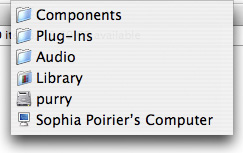
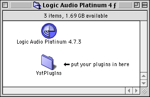

Why won't your plugins show up on my system?
Currently we are trying to update our plugins to run on modern systems but our updates are lagging. There are a few main sources of incompatibility:- In both Mac and Windows, you will find that our plugins currently only run in 32-bit hosts and not 64-bit hosts (with the exception of a few of our beta AUs without custom graphical interfaces that we released 64-bit versions of in July 2010).
- Some AU host applications (like Logic Pro X) are "sandboxed" and we haven't yet updated our AUs to be "sandbox-safe".
- If you are using VST for Mac, we have discontinued development of those long ago and the last versions only run on ancient PowerPC-based Macs.
Will there be Audio Unit versions of your plugins?
Yes, we have already ported all of our plugins. They are still works in progress, but you can find them at our Audio Units web page.Turntablist won't show up in my host application.
Be aware that Turntablist is an instrument plugin, not an effect. Most people asking this question are looking for Turntablist in their host's list of available effect plugins, when they should be looking for it in the list of instrument plugins.Who are you?
We are Sophia Poirier and Tom Murphy 7. We are buddies from back since grade school. We like to make music and, sometime around December 2000, making music software became a part of that process. You can contact us using this email form.
For more information about Tom, try visiting one of his numerous web sites. For more information about Sophia, wait for her to maybe finish a home page some day.
How do I do X? Or can your software do X?
Please read the documentation included with the plugin before you write to us. Most of the questions that we get are answered in the documentation.I think I found a bug.
Before writing to us about a problem, please check our web page to see if there might be a newer version of the software (we may have already fixed the bug). If you still need to write to us about a bug or some problem, please include the following information:- the exact steps of what you were doing (or trying to do) with our software, what you were expecting to happen, and what actually happened
- the name and version of the operating system that you're using
- the type of computer that you're using (manufacturer, CPU type, etc.)
- the name and version of the host software in which you are using our plugins (if it's a plugin that you're writing to us about)
- the version of our software that you're using (in Mac OS, do Get Info on the file in Finder to see the version; in Windows, uhhh, I guess you could write a simple VST host app that loads the DLL and uses the effGetVendorVersion opcode to query the plugin's version number)
- the format of our software that you are using, if it's a plugin (AU, VST, etc.)
Also, if you are using Mac OS X and experienced a crash with our software, crash logs can
often be very helpful, so it is great if you can send the crash log to us. You should be able
to find the crash log in ~/Library/Logs/CrashReporter (that's in your user home
Library).
What do I do with the files that I downloaded?
The files at this web page are compressed archives. This means that there are several files wrapped up into one single file (archive) which is shrunk down in size (compressed) so that it doesn't take as long to download. You need to decompress the archives before you do anything else. If the files don't automatically decompress (or "expand") when you download them, and if double clicking on them after downloading doesn't work either, then that probably means that you need to install software that can decompress these archives. We use (or have used) 4 archive formats: Mac disk images (files ending in .dmg), ZIP (files ending in .zip), gzipped tarballs (files ending in .tar.gz), and StuffIt (files ending in .sit). Mac OS X has software built-in for mounting its disk image files and for decompressing ZIP files and gzipped tarballs. StuffIt Expander is a free program that can decompress most archive formats (though not Mac disk images) and is available for Mac OS X, Windows, and GNU/Linux. Tom likes 7-Zip on Windows.
If you have successfully decompressed the archives, then read our installation instructions to learn how to install our software.
How do I install your plugins?
Audio Units:
To use Audio Unit plugins, you will need software (which we call the "host application") that can load them. We try to maintain a list of host applications.
Audio Units for Mac OS X should be placed in: Library/Audio/Plug-Ins/Components/
That can either be the user ~/Library folder (then the plugin will be
available only to that user):
... or the local root /Library folder (then the plugin will be available to all users of the computer):
The plugins are the things that look like folders (but aren't) and have ".component" file name extensions. If the plugins don't show up in your Audio Unit host, try logging out and then logging back in. If that doesn't help, then you might even need to reboot your computer (that is rare, though). Mac OS X version 10.2 or higher is required for Audio Units.
Please note that, at least so far, you can not put Audio Units into subfolders of the Components folder. They must all be right in the Components folder, otherwise they will not be found. I hope that this will change in a future update of Mac OS X.
VST plugins:
To use VST plugins, you will need software (which we call the "host application") that can load them. We try to maintain a list of host applications.
Most of the time, you install VST plugins by placing the plugin files into a folder called VstPlugIns. The VstPlugIns folder usually needs to be located in the same folder as the host application.
There is variation between some of the different hosts, so check your host's documentation
for more specific instruction. On Mac OS X, there is a standard location for VST plugins:
Library/Audio/Plug-Ins/VST/ (As with Audio Units, that can be in the user or
local domain.) Decent hosts automatically know to look for VST plugins there.
On Windows a common location is c:\Program Files\Steinberg\VstPlugins, but
you might need to check your host's documentation or settings.
Special note for Windows users: The plugin files for Windows have names with .dll extensions. If you use Windows and are not able to see the plugin files, then you probably have the "Do not show hidden or system files" preference selected under "Folder Options" in Windows. To change this, open any folder on your computer, open the View menu, and select Folder Options. Next, click on the View tab. You should now see the "Hidden files" option. Change it to "Do not show hidden files," or "Show all files" if you prefer. Now you should be able to see the .dll files.
Your plugins won't show up. What can I do?
First, make sure that you have installed them correctly. Please refer to our installation instructions.
Also, make sure that the host application that you are using supports the particular plugin(s) that you are trying to use. You can find details about many host applications and the sorts of plugins that they support in our list of host applications. And also make sure that your system supports the plugin(s) by checking our system requirements.
Logic, WaveBurner, and Digital Performer also have some additional things to be aware of when troubleshooting plugins not showing up...
Logic and WaveBurner:
Logic (version 7.0 and higher) and WaveBurner utilize AUValidation to determine which AUs will be enabled for use. AUValidation is Apple's official validator of conformance to the AU specification. Any AU that fails or crashes AUValidation will be disabled in Logic and WaveBurner. When you first launch Logic or WaveBurner, it will run each of your installed AUs through AUValidation. The results are remembered, and after that, new AUs will only be run through AUValidation when you install additional AUs or when you update to newer versions of your existing AUs.
All of our AUs currently pass AUValidation to the best of our knowledge. However, some of our older versions didn't pass, and sometimes Apple updates AUValidation in ways that can catch more problems that we previously didn't realize an AU had, and also on occasion some system-specific problems can affect them passing, so it's good to know how to troubleshoot this. From here on out, we will just talk about Logic (for simplicity's sake), but the instructions are all basically the same for WaveBurner.
First, you can try launching the Logic AU Manager and rescanning a failed AU. You launch it by going to the Logic application menu → Preferences → Start Logic AU Manager. The Logic AU Manager presents you with a list of all of your installed AUs and the results of their last AUValidation scan. You can push the Rescan button for an AU to rescan it. You can also, if all else fails, override a disabled AU here by clicking on its Use checkbox.
In more extreme cases of problems, you can force Logic to redo its AUValidation scanning
from scratch by trashing Logic's AUValidation results cache file. This file is located at
~/Library/Caches/com.apple.audiounits.cache (that's in your user home Library), or
~/Library/Caches/Logic/com.apple.LogicAudioUnits.plist for Logic 7. You should trash or move
that file when Logic is not running, and then relaunch Logic to begin a full rescan of all
installed AUs.
In cases where you are not able to get an AU of ours to pass AUValidation, and you are
sure that you have the latest version of the AU installed, please go into Logic AU Manager,
do a Rescan of the AU, select and copy all of the text in the validation results window that
pops open, and please send that to us. Also if the AU is crashing
AUValidation, please send us the crash log as well, which you should be able to find at:
~/Library/Logs/CrashReporter/auval.crash.log
Digital Performer:
Digital Performer also performs tests on all AUs before enabling them for use, but does so using its own tester application rather than Apple's AUValidation, so note that results can vary between the two. The way in which DP tests AUs, remembers the results, tests again only for new additions or updated versions, etc. is all similar to what is described above for Logic and AUValidation. All of our AUs currently pass DP's AU test to the best of our knowledge.
If you do encounter problems, you can force DP to redo its AU testing from scratch by
trashing DP's AU test results cache file. This file is located at
~/Library/Preferences/Digital Performer™/Audio Unit Info Cache
(that's in your user home Library). You should trash or move that file when DP is not
running, and then relaunch DP to begin a full rescan of all installed AUs.
In cases where you are not able to get an AU of ours to pass DP's AU test, and you are
sure that you have the latest version installed, please see if you have the file
~/Documents/MOTU AU Test Results.txt and send
that to us. Also if the AU is crashing DP's AU test, please send us the crash log as well,
which you should be able to find at ~/Library/Logs/CrashReporter/MOTU_AU_Examiner.crash.log
Do your Audio Unit versions pass AUValidation in Logic?
Yes, they all pass. If you are experiencing troubles, make sure to download the latest versions from our site. Note that, if you do that, you may have to launch the Logic AU Manager (available from Logic's "Preferences" menu) and "rescan" the failed plugin(s) because Logic won't do it automatically if it's a newer beta build with the same version number.
Why don't your plugins work in Fruity Loops?
We're not sure, but we are aware of the problem. We hope to address this eventually, but due to our Windows development currently being on hold, we can't say when this will happen.
How can I make plugins?
If you want to make plugins, the first thing you want to do is learn how to program a little. You probably want to learn C and C++ since that's what the AU and VST SDKs are written in. Delphi is apparently also a possibility for VST Windows. For the most part, other languages unfortunately are not suitable for realtime audio applications.
If you want to make Audio Unit plugins, first pick up the CoreAudio SDK from Apple Developer Connection. The Audio Unit SDK is a part of the CoreAudio SDK. Also the Audio Unit Programming Guide is a good starting point. There is also a CoreAudio API email list to which you may want to subscribe, it's very useful (as are the list's archives). You also might want to check out the CoreAudio Swiki. Also, Apple has published a couple of useful intro developer articles: Turning Up The Volume With Audio Units and The Sound Of Opportunity Knocking: The Audio Units Community Takes Off. And finally, once you're ready to make fancy graphics for your plugins, I recommend checking out the AUGUI Framework.
If you want to make VST plugins, go to Steinberg's web site and get the VST SDK. This has the source code that you need to make VST plugins, source code for a few example plugins, and some half-baked "documentation". You also might want to subscribe to the VST plugin developers email list that Steinberg manages. That way, you have access to the list archives (there's a lot of information in there) and you can post your own questions to the list when you encounter problems.
For general audio/DSP/music programming, we also recommend the music-dsp source code archive and email list for information about audio DSP (digital signal processing) in general, and also the links section at Tobybear's web page.
Can we put your software on a CD/DVD that we will include with our magazine?
The answer to that question is usually yes, with the following stipulations:
- send us 2 complementary copies of that issue of your magazine (one to Tom and one to Sophia)
- include versions for all supported platforms (if it makes sense to do that; if your magazine focuses on a specific platform, then it might not make sense)
- make sure that you go to our web page at the last minute and get the most recent versions of our stuff
- follow the redistribution terms of the software's license
- if possible, include some piece about us in your magazine (review, news, interview)
- contact us first (we will probably say "yes" if you agree to these stipulations, but please still contact us first)
Will there be LADSPA / DirectX / MAS / AAX / RTAS / TDM / etc. versions?
It's very unlikely.
Especially all of Digidesign's formats (AAX, RTAS, AudioSuite, and TDM) because they are completely closed, proprietary formats. You need Digidesign's permission to make plugins in those formats and then you must keep the details secret, which doesn't work for us since we release our source code.
And we definitely won't do MAS since Digital Performer now supports Audio Units (as of version 4.1), so MAS is basically an irrelevant format.
LADSPA currently lacks a lot of features that our plugins rely on (tempo and other musical time information, MIDI, custom GUIs, etc.), so it would be difficult to support that format and it would require removing a lot of functionality from our plugins.
Do you have a banner that I can put on my web site?
Yes we do, check it out:
{kind=link}
You can add it to your web site by including the following HTML:
<a href="http://destroyfx.org/">
<img src="http://destroyfx.org/banner.gif" width="468" height="60" alt="visit the Destroy FX web site">
</a>
Why won't VST MIDI or VST GUI Tester run on my computer? I use Windows and/or Mac OS X.
Because there are no Windows or Mac OS X versions of those apps. They only run under old Mac OS (8 or 9, not X) currently. At the time when we made these, Max/MSP was not yet available for Mac OS X or Windows. Now it is, however, we've discontinued development of these applications (because we don't think that they're very worthwhile). The source patches are still available, though, if anyone wants to try to create stand-alone applications from them for those other platforms.
Are you still going to make new software?
Probably. But we've definitely been somewhat on hold for a while now. Sophia and Tom are both doing other software development work full-time now. Also Sophia, when doing work on Destroy FX stuff, has been pretty distracted with the daunting project of redesigning an entire base plugin framework and new graphic interface library for all of our plugins to share. This undertaking is very far along now, but the graphics part still has quite a bit more work to go. And then Tom will have to port Sophia's work (which is only for Mac Audio Units) to VST Windows at some point in order for us to make Windows plugins again. So that's basically what's been occupying our software-making attention lately. We both do have some newer plugins in the works, but as yet are unfinished.